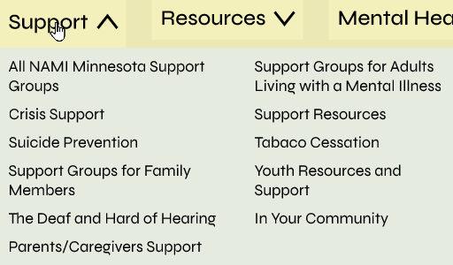

Sunayana Simha-UI Designer, Created the theme of our site
Jonas Belus-UX Designer, Prototype Builder, Component Builder
Jordan Och-UX Researcher, UI Designer
Tools
Project Overview
The Problem
The website for NAMI MN has a very poor information architecture, unappealing style, and the components
of the site don’t resize well. Users find it hard to find what they need and feel like the site is
unwelcoming.
The Solution
We used modern UX/UI design techniques to create an easy to use site that feels welcoming, is usable on
any device, and most importantly allows the user to get the help they need.
Project Research
User Persona
To start off the research the whole team got together to create a user persona to help predict what kind of
user would be visiting the website. The user we came up with is Corey Lynch; a graphic design student who is
struggling to balance their work, school, and social life. After we finalized our user persona we made an
interview plan and script alongside a survey for people who weren't available for a full interview.
Created by Hailey Collins
Competitor Analysis
We ended up with lots of data that pointed to a poor website layout and navigation structure. Because of that
I wanted to do a competitor analysis on a few other NAMI websites to see how they present similar
information. The sites I looked at were the North Dakota and Wisconsin versions of the site which put more
important mental health resources front and center on the home page.
Card Sorting Activity
I also did a full navigation analysis which included the primary nav and the layout of the site.
After the analysis I created a card sorting activity so I could see how people would naturally sort
the content in the site.
Site Mapping
Using the results of both the interviews and card sorting activity I created a sight map. My goal was
to create an information structure that allowed the user to get support as fast as possible.
Early Prototyping
Wireframing and Prototyping
Once the team and I reviewed and iterated the site map it was time to create wireframes and prototypes
for testing. I was in charge of building components for this part and since we were in the lo-fi phase I
focused on the primary navigation. We decided on a standard click-to-open drop down menu instead of the
hover menu since it’s easier to use.
Created by Jonas Belus
Navigation
Since there were a lot of different tabs in some of the drop downs I created 2 columns to help make it
easier to scan through.

For mobile I made a simple accordion menu to help compress all of the content to make it easier to scroll
through.
User Tests
After we finished the lo-fi prototype it was time for user tests. The first round of testers didn’t have
too many issues with completing the task but also felt like the content on the page was crowded. This
also helped us see what does and doesn’t work in terms of labeling buttons and icons.
Style Guide
Around that same time Sunayana had finished our style guide so the group looked it over. We wanted to
make the site feel like it was there to help and that the user would be taken care of. After a few color
and font tweaks we ended on a final version so it was time to start on the hi-fi version of our site.
Created by Sunayana Sumha
Final Site
Hi-Fi Prototype
For the hi-fi version I was in charge of the desktop layout. I took a lot of inspiration from the other NAMI
websites like adding a support group and get involved section. But I also added some new elements as well
like the navigation cards Jonas built that would take you to the most vital parts of the site. Or the image
carousel which was added to make the user feel more comfortable and welcome.
Created by Jonas Belus
Final Prototype
After about 8 user tests conducted by all of the members of the team I created a new iteration of the site.
Test users felt that the site was cluttered and some of the buttons were hard to read. A big change was the
text layout on the final page; I reorganized the content to be easier to scan through.
Final Thoughts
Optimizing Our Process
Throughout the project we did a handful of tasks that weren’t exactly valuable to us. We did them just to
check a box or meet a requirement. Instead, we should have looked into why a certain design or research
process is beneficial over others. Sometimes not everything applies to your specific needs. An example in
our case would be the I like, I wish, and I wonder matrix; we got plenty of data that was more in depth and
specific form our interviews and survey.
Optimizing Our Workspace
At the end of the project I went through and renamed, reformatted, and organized our figma board. This made
it way easier to find specific components, wireframes, and prototypes. Once I was done I thought to myself,
”probably should have done this throughout the project”. It’s a simple thing but makes a huge difference in
workflow and coordination.
Creating a Base Template
When I was working on the hi-fi version of the site I had to recreate many wireframes and groups because I
didn’t create a base layout for each webpage. For my next projects I’d like to have a base design for each
site that I can add components, menus, and other assets into without remaking things like a header and
footer.